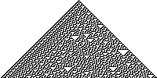
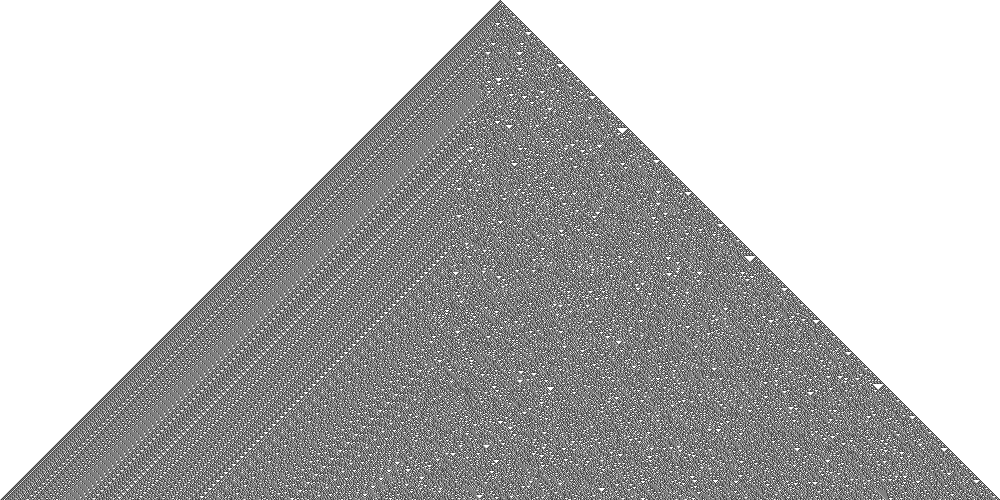
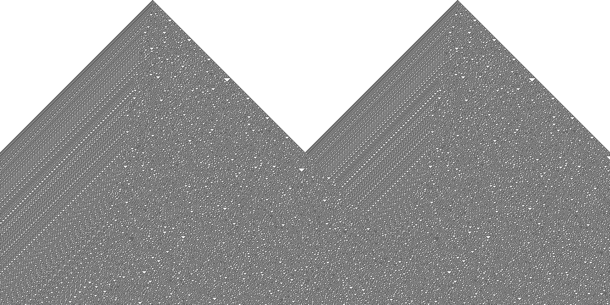
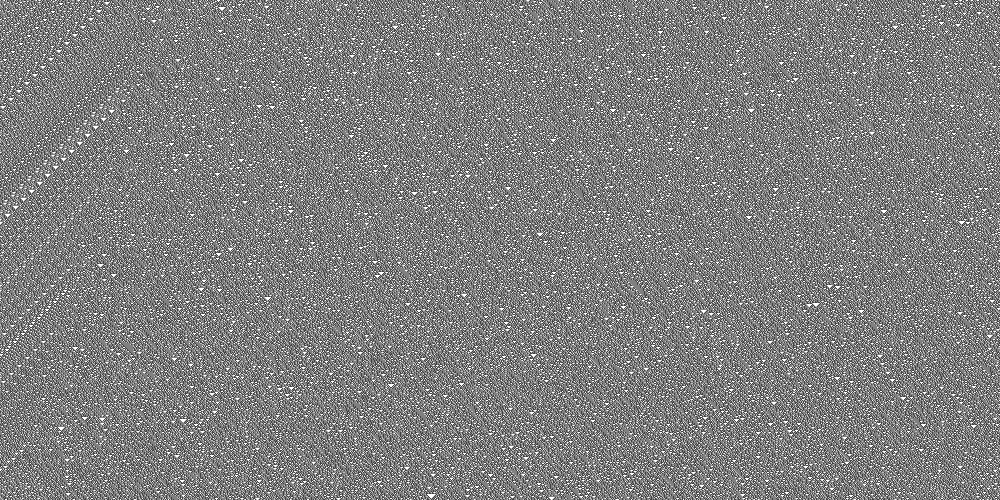

Let’s draw some one dimensional cellular automata!

module CA where
import qualified Codec.Picture as JP
import qualified Data.List as L
import qualified Data.Set as SA cellular automaton is a discrete model of “space”. It consists of
It’s not too hard to see that these properties make cellular automata (CA for short) a very special and restricted model of how the universe appears to work. That’s not at all to say that the actual universe “is” a CA, any more than brains “are” neural networks; this is just a mathematical model that happens to do some cool stuff and show that complex rules are not necessary for systems to exhibit complex behavior.
If a CA is small enough we can draw pictures of it, which is super fun! Conway’s Game of Life, Langston’s Ant, and Wireworld are super neato examples of cellular automata. These examples are also two-dimensional, because they take place on a square grid. (Although it turns out nailing down exactly what dimension means for a discrete space is surprisingly tricky!) Any particular configuration of the grid is a generation, and we can visualize time moving forward by animating the grid – one frame per generation.
Even simpler are the one-dimensional automata. These inhabit a universe where every location in space corresponds to an integer, and the immediate neighbors of location \(k\) are locations \(k-1\) and \(k+1\). Now we can visualize the evolution of the automaton with a single static image – each generation is represented by a row of pixels, and time flows down.
Let’s write some code that draws one-dimensional automata. To keep it simple we can restrict even further. Every CA needs, in addition to the space it inhabits, two pieces of information: the state space for each location, and the rules that govern how states change from one time step to the next. Typically the rules are set up so that states can only influence each other within some maximum radius.
The simplest possible one-dimensional CA have two states (Black/White or On/Off) and the rules have radius 1. These very simple examples are sometimes called elementary.
We need a way to represent a single generation. Since our CA has only two states (On and Off) it’s enough to keep track of which cells are On, and since the space is one dimensional it’s enough to keep track of which integers have On cells in them. If we make the reasonably mild assumption that only finitely many cells can be on in a given generation, we can represent generations using finite sets of integers. As a minor optimization we’ll also keep track of the largest and smallest On cells. (I’m not sure this is necessary but it seemed like a good idea at the time!)
data Generation = G
{ borders :: (Integer, Integer) -- extreme set bits
, setBits :: S.Set Integer
} deriving ShowGiven a generation and a cell address, we can ask whether that cell is On or Off.
isOn
:: Generation -> Integer -> Bool
isOn (G (lo,hi) m) k =
if (k < lo) || (hi < k)
then False
else S.member k mGiven a generation and a range of cell addresses, we can get a list of booleans representing the pattern of On and Off cells in those addresses.
getGeneration
:: (Integer, Integer) -- render window
-> Generation
-> [Bool]
getGeneration (a, b) g =
map (isOn g) [a..b]Finally, given a generation we can construct the next generation. In order to do this we need an update rule. For elementary CA the value of cell \(k\) at time step \(i\) depends only on the values of \(k-1\), \(k\), and \(k+1\) at time step \(i-1\). So we can model the update rule using a single function that takes 3 booleans and returns a boolean. Also note that the boundary values expand by 1 at each step.
nextGeneration
:: (Bool -> Bool -> Bool -> Bool) -- update rule
-> Generation
-> Generation
nextGeneration f (G (a,b) m) = G (a-1, b+1) $
S.fromList $ filter h [(a-1)..(b+1)]
where
h i = f
(S.member (i-1) m)
(S.member i m)
(S.member (i+1) m)For visual debugging in the terminal, we also define a function that renders a single generation to text.
renderGeneration
:: (Integer, Integer) -- render window
-> Generation
-> String
renderGeneration (a, b) g =
map renderCell $ getGeneration (a,b) g
renderCell
:: Bool -> Char
renderCell p =
if p then 'X' else ' 'Now we can represent the future of a CA as a list of generations…
…and we can get a list of lists of booleans representing the state of the CA over a range of times and cell addresses.
getHistory
:: (Integer, Integer) -- height (time)
-> (Integer, Integer) -- width (space)
-> History
-> [[Bool]]
getHistory (u,v) w (H gs) =
map (getGeneration w) $ L.genericTake (v-u) $ L.genericDrop (u-1) gsAgain, for debugging at the terminal here’s a function that renders a CA as a string.
renderHistory
:: (Integer, Integer) -- height
-> (Integer, Integer) -- width
-> History
-> String
renderHistory (u,v) w g =
L.unlines $ map (map renderCell) $ getHistory (u,v) w gNext we have a helper function that constructs the history of a CA from its initial state and update function.
populate
:: Generation -- first generation
-> (Bool -> Bool -> Bool -> Bool) -- update rule
-> History
populate initial update = H (f initial)
where
f :: Generation -> [Generation]
f g = g : f (nextGeneration update g)And a helper function for constructing the initial generation by supplying a list of set locations.
We’re almost there. The only remaining bit is to define at least one specific update rule. For elementary CA there are only \(256 = 2^8\) possible rules, which have a natural indexing scheme. Most of the possible rules are not very interesting, but one particularly cool example is the so-called rule 30, defined like this:
rule30 :: Bool -> Bool -> Bool -> Bool
rule30 p1 p2 p3 = case (p1, p2, p3) of
(True, True, True) -> False
(True, True, False) -> False
(True, False, True) -> False
(True, False, False) -> True
(False, True, True) -> True
(False, True, False) -> True
(False, False, True) -> True
(False, False, False) -> FalseTo actually visualize the evolution of a CA we’ll define two more helpers. First we render CA as ascii text at the terminal.
renderAscii
:: Generation
-> (Integer, Integer)
-> (Integer, Integer)
-> IO ()
renderAscii initial (u,v) (a,b) =
putStrLn $ renderHistory (u,v) (a,b) $ populate initial rule30For example:
$> renderAscii (withBits [0]) (0,10) (-10,10)
X
XXX
XX X
XX XXXX
XX X X
XX XXXX XXX
XX X X X
XX XXXX XXXXXX
XX X XXX X
XX XXXX XX X XXX
$> renderAscii (withBits [-7,7]) (0,10) (-10,10)
X X
XXX XXX
XX X XX X
XX XXXX XX XXXX
X X X XX X
XXXX XXX XX XXXX X
X X X XX X X
XXX XXXXX X XXXX XX
XXX X X XXX
X XX X XX XX XX X
$> renderAscii (withBits [-12,0,12]) (0,20) (-20,20)
X X X
XXX XXX XXX
XX X XX X XX X
XX XXXX XX XXXX XX XXXX
XX X X XX X X XX X X
XX XXXX XXX XX XXXX XXX XX XXXX XXX
XX X X X X X X X X X
XX XXXX XXX XXXXXX XXX XXXXXX XXXXXX
XX X XXX X XXX X XXX X
X XXXX XX X XXX XX X XXX XX X XX
X X XXX X X XX XXX X X XX XXXX XX
XXXX XX X XXXX X X XXXX X X X X
X XXX XX XX XXXXX XX XXXXX XX X
XX XX XXX X X XX X X XX XXX X
X XXX XXX XXXX X XX XXXX X XX XXX
XX X XXX X XX XX X XXXX XXX
XXX XXXX X XXX XX X XXXX XX X XX
X XXX XXX X XXX XXX X XXX X XXXXX
XXX X XX XXXX X XX XX XXXX X
X XXX X X XX X XXX XX X X XX X XXNeat! But the chunky resolution of text means there’s a pretty low limit to how much of the CA’s history we can see at once. To get around this we can also render them as PNGs:
renderPng
:: FilePath
-> Generation
-> (Integer, Integer)
-> (Integer, Integer)
-> IO ()
renderPng path initial (h1, h2) (w1, w2) = do
let
imgWidth = fromIntegral $ w2 - w1
imgHeight = fromIntegral $ h2 - h1
png = JP.generateImage px imgWidth imgHeight
h = getHistory (h1, h2) (w1, w2) $ populate initial rule30
px i j = if (h !! j) !! i
then JP.PixelRGB8 0 0 0
else JP.PixelRGB8 255 255 255
JP.savePngImage path (JP.ImageRGB8 png)Here’s some examples. These take a few seconds to render. (View image to zoom in!)
$> renderPng "foo.png" (withBits [0]) (0,1000) (-1000,1000)
$> renderPng "foo.png" (withBits [-500,500]) (0,1000) (-1000,1000)
$> renderPng "foo.png" (withBits [0]) (1000,2000) (-1000,1000)